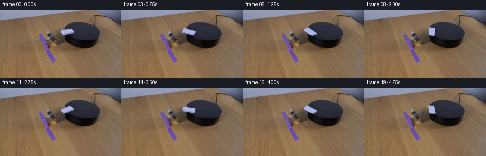
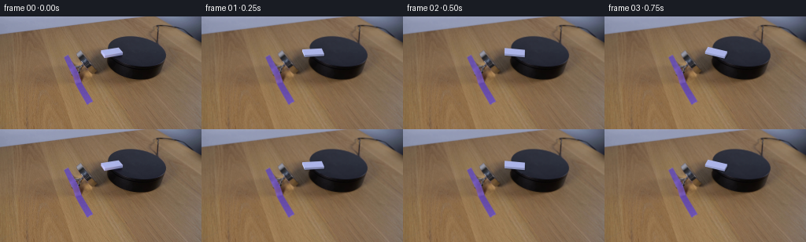

CODING AGENTS AS PIXEL WORLD MODELS
traex/GPT-6.1-Sol · 0094
点击播放 · 原生 RGB 像素
此结果可播放，但该运行尚未通过最终提交审核。页面展示不代表评测通过。
逐轮保存的候选
回放视频、检查图与代码变化。
每份候选均可单独播放。实际图片检查记录在下方工具轨迹中。
候选 01播放与检查图
点击播放 · 原生 RGB 像素


展开代码变化
--- 上一保存版本
+++ 本次保存版本
@@ -0,0 +1,136 @@
+from pathlib import Path
+import math
+import numpy as np
+import cv2
+from PIL import Image
+from scipy.ndimage import gaussian_filter
+import artifact_io
+
+ROOT = Path(__file__).resolve().parent
+W,H=256,144
+S=6
+P=np.array([[1.,0.],[.08,.55]])
+center=np.array([141.8,47.45])
+L=25.5
+D=12.4
+height=2.55
+initial=math.atan2(-3.6-.08*23.5,.55*23.5)
+
+
+def make_background(im):
+ yy,xx=np.mgrid[:H,:W]
+ f=im.astype(float)
+ # The original white tile and its subpixel edges are isolated by RGB.
+ mask=((xx>=125)&(xx<=159)&(yy>=38)&(yy<=54)&(f[:,:,2]-f[:,:,0]>17)&(f[:,:,0]>43)).astype(np.uint8)
+ mask=cv2.dilate(mask,np.ones((3,3),np.uint8))
+ # A small contact shadow on the exposed upper surface is removed as well.
+ extra=np.zeros((H,W),np.uint8)
+ cv2.fillPoly(extra,[np.array([(140,50),(156,48),(158,54),(148,56),(140,52)])],1)
+ mask=np.maximum(mask,extra)
+ # Reconstruct only occluded pixels; the camera and complete environment stay fixed.
+ bg=cv2.inpaint(im,mask*255,4,cv2.INPAINT_TELEA).astype(float)
+ # Local table illumination has a pronounced gradient due to the fixed magnet.
+ good=(xx>=119)&(xx<=136)&(yy>=33)&(yy<=62)&(mask==0)&(f[:,:,0]>50)&(f[:,:,0]-f[:,:,1]>5)
+ def features(x,y):
+ a=(x-128)/12;b=(y-47)/14
+ return np.stack([np.ones_like(a),a,b,a*b,a*a,b*b,a*b*b,b*b*b],axis=-1)
+ feat=features(xx,yy)
+ coef=np.linalg.lstsq(feat[good],f[good],rcond=None)[0]
+ table=feat@coef
+ rng=np.random.default_rng(994)
+ noise=rng.normal(0,.7,(H,W))
+ # Fitted silhouette of the top surface, recovered from the unoccluded edge.
+ c=np.array([173.29267083,45.02360773])
+ Q=np.array([[.00082968,-.00039384],[-.00039384,.00268520]])
+ dx=xx-c[0];dy=yy-c[1]
+ inside=dx*dx*Q[0,0]+2*dx*dy*Q[0,1]+dy*dy*Q[1,1]
+ dist=(1-inside)*12
+ topalpha=np.clip(dist+.5,0,1)
+ sidex=136.8+.012*(yy-48)**2
+ sidealpha=np.clip(xx-sidex+.5,0,1)
+ top=np.stack([42-.18*(yy-40)+.035*(xx-140),45-.19*(yy-40)+.030*(xx-140),57-.19*(yy-40)+.030*(xx-140)],-1)
+ side=np.stack([16+.27*(xx-137),14+.28*(xx-137),15+.46*(xx-137)],-1)
+ table=.82*table+.18*bg
+ # At the outer edge, no matte fill leaks onto the stationary tabletop.
+ recon=table*(1-sidealpha[...,None])+side*sidealpha[...,None]
+ recon=recon*(1-topalpha[...,None])+top*topalpha[...,None]
+ recon+=noise[...,None]
+ feather=gaussian_filter(mask.astype(float),.38)
+ # Full replacement inside the tile, subpixel blending only at its outside edge.
+ feather=np.maximum(feather,mask*.98)
+ bg=f*(1-feather[...,None])+recon*feather[...,None]
+ return np.clip(bg,0,255).astype(np.uint8)
+
+
+def geometry(angle):
+ u=np.array([math.cos(angle),math.sin(angle)])
+ v=np.array([-math.sin(angle),math.cos(angle)])
+ ground=np.array([-u*L/2-v*D/2,u*L/2-v*D/2,u*L/2+v*D/2,-u*L/2+v*D/2])
+ bottom=ground@P.T+center
+ top=bottom-np.array([0,height])
+ return ground,bottom,top,u,v
+
+
+def polygon_mask(poly):
+ m=np.zeros((H*S,W*S),np.uint8)
+ cv2.fillPoly(m,[np.round(poly*S).astype(np.int32)],255,lineType=cv2.LINE_AA)
+ return m.astype(float)/255
+
+
+def render(bg,angle):
+ ground,bottom,top,u,v=geometry(angle)
+ canvas=cv2.resize(bg.astype(float),(W*S,H*S),interpolation=cv2.INTER_CUBIC)
+ # Very soft shadow tied to the tile's footprint, not the platform geometry.
+ sm=polygon_mask(bottom+np.array([1.1,.85]))
+ sm=gaussian_filter(sm,.7*S)*.37
+ canvas*=1-sm[...,None]
+ ambient=np.array([173.,181.,232.])
+ light=np.array([-.8,-.6])
+ normals=[-v,u,v,-u]
+ # Draw the two camera-facing vertical sides, from their farthest edge first.
+ sides=[]
+ for i,n in enumerate(normals):
+ if n[1]>0:
+ j=(i+1)%4
+ poly=np.array([top[i],top[j],bottom[j],bottom[i]])
+ col=ambient*(.97+.28*np.dot(n,light))
+ col=np.clip(col,0,250)
+ sides.append((np.mean(bottom[[i,j],1]),poly,col))
+ for _,poly,col in sorted(sides,key=lambda a:a[0]):
+ m=polygon_mask(poly)
+ # The moulded plastic has a slight soft highlight toward its upper rim.
+ ygrid=np.arange(H*S)[:,None]/S
+ tint=np.clip((poly[:,1].mean()-ygrid)*1.6,-3,3)
+ tex=col[None,None,:]+tint[:,:,None]
+ canvas=canvas*(1-m[...,None])+tex*m[...,None]
+ m=polygon_mask(top)
+ # Subtle surface grain; no marks or pips are added if absent in frame zero.
+ yy,xx=np.mgrid[:H*S,:W*S]
+ toptex=np.broadcast_to(ambient,(H*S,W*S,3)).copy()
+ noise=.40*np.sin(xx*1.37+yy*2.04)+.25*np.sin(xx*.73-yy*1.21)
+ toptex+=noise[...,None]
+ canvas=canvas*(1-m[...,None])+toptex*m[...,None]
+ # Narrow bevels visually round the plastic edges rather than leaving vector-sharp seams.
+ edge=np.zeros((H*S,W*S),np.uint8)
+ cv2.polylines(edge,[np.round(top*S).astype(np.int32)],True,255,thickness=2,lineType=cv2.LINE_AA)
+ em=edge.astype(float)/255*.12
+ canvas=canvas*(1-em[...,None])+np.array([187,194,244])*em[...,None]
+ result=cv2.resize(canvas,(W,H),interpolation=cv2.INTER_AREA)
+ return np.clip(result,0,255).astype(np.uint8)
+
+
+def main():
+ im=np.array(Image.open(ROOT/'first_frame.png').convert('RGB'))
+ bg=make_background(im)
+ Image.fromarray(bg).save(ROOT/'.tmp/background.png')
+ Image.fromarray(render(bg,initial)).save(ROOT/'.tmp/reconstructed_start.png')
+ frames=[im.copy()]
+ for i in range(1,20):
+ t=i/4
+ # Uniform clockwise yaw, with a brief smooth spin-up from rest.
+ theta=math.radians(62)*(t-.12*(1-math.exp(-t/.12)))
+ frames.append(render(bg,initial+theta))
+ frames=np.stack(frames).astype(np.uint8)
+ artifact_io.save(frames,ROOT)
+
+if __name__=='__main__':main()
可观测工具轨迹
实际执行的命令与返回图片。
命令 1exit 0
/bin/bash -lc 'ls -la && cat prompt.txt && cat GENERATION_RULES.md'
命令 2exit 0
/bin/bash -lc "cat artifact_io.py && python - <<'PY'
from PIL import Image
import numpy as np
im=np.array(Image.open('first_frame.png'));print(im.shape)
a=np.array(Image.open('first_frame.png').resize((128,72)))
# brightness ascii
c=' .,:;irsXA253hMHGS#9B&@'
g=a.mean(2)
for row in g:print(''.join(c[min(len(c)-1,int(v)*len(c)//256)] for v in row))
print('RGB samples')
for y in range(0,144,8):
print(y,[(x,tuple(im[y,x])) for x in range(0,256,16)])
PY"命令 3exit 0
/bin/bash -lc "python - <<'PY'
from PIL import Image
import numpy as np
from scipy.ndimage import label
im=np.array(Image.open('first_frame.png')).astype(int)
m=(im[:,:,2]>im[:,:,0]*1.08)&(im.mean(2)>130)&(np.indices(im.shape[:2])[0]>24)
l,n=label(m)
for j in range(1,n+1):
ys,xs=np.where(l==j)
if len(xs)>2: print(len(xs),(xs.min(),ys.min(),xs.max(),ys.max()),im[ys,xs].mean(0))
chars=' .:-=+*#%@'
print('crop brightness')
print(' '+''.join(str(x//10%10) for x in range(82,214)))
print(' '+''.join(str(x%10) for x in range(82,214)))
for y in range(23,86):
print(f'{y:3d} '+''.join(chars[int(v)*len(chars)//256] for v in im[y,82:214].mean(1)))
print('crop whiteness blue')
for y in range(23,86):
st=''
for r,g,b in im[y,82:214]:
if max(r,g,b)<30:c=' '
elif b>r+15: c='W' if (r+g+b)/3>150 else 'w' if (r+g+b)/3>100 else 'b'
elif r>g+15:c='t' if r>100 else '.'
else:c='@' if (r+g+b)/3>180 else '#' if (r+g+b)/3>140 else '+' if (r+g+b)/3>100 else '-' if (r+g+b)/3>60 else ':'
st+=c
print(f'{y:3d} '+st)
PY"命令 4exit 0
/bin/bash -lc "python - <<'PY'
import numpy as np
from PIL import Image
im=np.array(Image.open('first_frame.png'))
for y in range(37,58):
print('y',y)
for x in range(121,161):
r,g,b=im[y,x]
print(f'{x}:{r}/{g}/{b}',end=' ')
print()
PY"命令 5exit 0
/bin/bash -lc "python - <<'PY'
from PIL import Image
import numpy as np
im=np.array(Image.open('first_frame.png'))
print(' y ', ' '.join(f'{x:3d}' for x in range(132,213,4)))
for y in range(24,82,2): print(f'{y:3d}:',' '.join(f'{im[y,x].mean():3.0f}' for x in range(132,213,4)))
PY"命令 6exit 0
/bin/bash -lc "python - <<'PY'
import numpy as np
from PIL import Image
im=np.array(Image.open('first_frame.png'))
print(' '+''.join(str(x//10%10) for x in range(133,202)))
print(' '+''.join(str(x%10) for x in range(133,202)))
for y in range(48,68):
out=''
for v in im[y,133:202].mean(1):
out+='W' if v>100 else '@' if v>65 else 'a' if v>55 else '.' if v>39 else ',' if v>30 else ':' if v>20 else 'i' if v>13 else '#' if v>6 else 'X'
print(y,out)
PY"命令 7exit 0
/bin/bash -lc "python - <<'PY'
import numpy as np
from PIL import Image
im=np.array(Image.open('first_frame.png'))
for y in range(24,81):
v=im[y].mean(1);m=(im[y,:,0]<70)&(im[y,:,0]-im[y,:,1]<5)
inds=np.where(m&(np.arange(256)>130))[0]
if len(inds)>0:
print(y, inds.min(),inds.max(), [(x,round(v[x],1)) for x in range(134,164,2)])
PY"命令 8exit 0
/bin/bash -lc "python - <<'PY'
from PIL import Image
import numpy as np
im=np.array(Image.open('first_frame.png')).astype(float)
c=' .,:;irsXA253hMHGS#9B&@'
print(' '+''.join(str(x//10%10) for x in range(88,177)))
print(' '+''.join(str(x%10) for x in range(88,177)))
for y in range(35,89):
print(f'{y:3d} '+''.join(c[int(v)*len(c)//256] for v in im[y,88:177].mean(1)))
print('specific RGB left dark area')
for y in range(42,83,3):
print(y,[tuple(im[y,x].astype(int)) for x in range(103,139,4)])
PY"命令 9exit 0
/bin/bash -lc "python - <<'PY'
import numpy as np
pts=np.array([(138,35),(145,29),(154,26),(167,25),(178,26),(188,30),(198,35),(205,41),(209,47),(210,52),(207,57),(201,61),(192,64),(178,65),(163,62)])
x,y=pts.T
A=np.c_[x*x,x*y,y*y,x,y];c=np.linalg.lstsq(A,np.ones(len(x)),rcond=None)[0];print(c)
for x in range(127,164,2):
rr=np.roots([c[2],c[1]*x+c[4],c[0]*x*x+c[3]*x-1]); print(x,rr)
Q=np.array([[c[0],c[1]/2],[c[1]/2,c[2]]]);center=-np.linalg.solve(Q,c[3:])/2
print('center',center,'evals',np.linalg.eigh(Q))
PY"命令 10exit 0
/bin/bash -lc "python - <<'PY'
import numpy as np
from PIL import Image
im=np.array(Image.open('first_frame.png')).astype(float)
print('left edge pixel rows')
for y in range(26,41):
r=im[y,:,0]; ids=np.where((r<80)&(np.arange(256)>130)&(np.arange(256)<190))[0]
if len(ids):print(y,ids.min(),tuple(im[y,ids.min()-1]),tuple(im[y,ids.min()]))
print('front dark edge left-most rows')
for y in range(53,70):
r=im[y,:,0]; ids=np.where((r<45)&(np.arange(256)>130)&(np.arange(256)<165))[0]
if len(ids):print(y,ids.min(),tuple(im[y,ids.min()-1]),tuple(im[y,ids.min()]))
PY"命令 11exit 0
/bin/bash -lc "python - <<'PY' import importlib.util for x in ['cv2','scipy','PIL']:print(x, bool(importlib.util.find_spec(x))) PY"
命令 12exit 0
/bin/bash -lc "cat > .tmp/analyze_bg.py <<'PY'
import numpy as np
from PIL import Image
im=np.array(Image.open('first_frame.png')).astype(float)
# precise ellipse least squares
p=np.array([(154,26),(150,27),(147,28),(145,29),(143,30),(142,31),(141,32),(140,33),(139,34),(138,36),(137.5,38),(137,40),(167,25),(178,26),(188,30),(198,35),(205,41),(209,47),(210,52),(207,57),(201,61),(192,64),(178,65),(163,62)])
x,y=p.T
A=np.c_[x*x,x*y,y*y,x,y];c=np.linalg.lstsq(A,np.ones(len(x)),rcond=None)[0]
Q=np.array([[c[0],c[1]/2],[c[1]/2,c[2]]]);cen=-np.linalg.solve(Q,c[3:])/2
scale=1-(cen@Q@cen+c[3:]@cen); q=Q/scale
print('center',cen,'Q',q,'eig',np.linalg.eigh(q),'r',1/np.sqrt(np.linalg.eigvalsh(q)))
for yy in range(39,54):
rr=np.roots([c[0],c[1]*yy+c[3],c[2]*yy*yy+c[4]*yy-1]);print(yy,rr)
PY
python .tmp/analyze_bg.py"命令 13exit 0
/bin/bash -lc "cat > generate.py <<'PY'
from pathlib import Path
import math
import numpy as np
import cv2
from PIL import Image
from scipy.ndimage import gaussian_filter
import artifact_io
ROOT = Path(__file__).resolve().parent
W,H=256,144
S=6
P=np.array([[1.,0.],[.08,.55]])
center=np.array([141.8,47.45])
L=25.5
D=12.4
height=2.55
initial=math.atan2(-3.6-.08*23.5,.55*23.5)
def make_background(im):
yy,xx=np.mgrid[:H,:W]
f=im.astype(float)
# The original white tile and its subpixel edges are isolated by RGB.
mask=((xx>=125)&(xx<=159)&(yy>=38)&(yy<=54)&(f[:,:,2]-f[:,:,0]>17)&(f[:,:,0]>43)).astype(np.uint8)
mask=cv2.dilate(mask,np.ones((3,3),np.uint8))
# A small contact shadow on the exposed upper surface is removed as well.
extra=np.zeros((H,W),np.uint8)
cv2.fillPoly(extra,[np.array([(140,50),(156,48),(158,54),(148,56),(140,52)])],1)
mask=np.maximum(mask,extra)
# Reconstruct only occluded pixels; the camera and complete environment stay fixed.
bg=cv2.inpaint(im,mask*255,4,cv2.INPAINT_TELEA).astype(float)
# Local table illumination has a pronounced gradient due to the fixed magnet.
good=(xx>=119)&(xx<=136)&(yy>=33)&(yy<=62)&(mask==0)&(f[:,:,0]>50)&(f[:,:,0]-f[:,:,1]>5)
def features(x,y):
a=(x-128)/12;b=(y-47)/14
return np.stack([np.ones_like(a),a,b,a*b,a*a,b*b,a*b*b,b*b*b],axis=-1)
feat=features(xx,yy)
coef=np.linalg.lstsq(feat[good],f[good],rcond=None)[0]
table=feat@coef
rng=np.random.default_rng(994)
noise=rng.normal(0,.7,(H,W))
# Fitted silhouette of the top surface, recovered from the unoccluded edge.
c=np.array([173.29267083,45.02360773])
Q=np.array([[.00082968,-.00039384],[-.00039384,.00268520]])
dx=xx-c[0];dy=yy-c[1]
inside=dx*dx*Q[0,0]+2*dx*dy*Q[0,1]+dy*dy*Q[1,1]
dist=(1-inside)*12
topalpha=np.clip(dist+.5,0,1)
sidex=136.8+.012*(yy-48)**2
sidealpha=np.clip(xx-sidex+.5,0,1)
top=np.stack([42-.18*(yy-40)+.035*(xx-140),45-.19*(yy-40)+.030*(xx-140),57-.19*(yy-40)+.030*(xx-140)],-1)
side=np.stack([16+.27*(xx-137),14+.28*(xx-137),15+.46*(xx-137)],-1)
table=.82*table+.18*bg
# At the outer edge, no matte fill leaks onto the stationary tabletop.
recon=table*(1-sidealpha[...,None])+side*sidealpha[...,None]
recon=recon*(1-topalpha[...,None])+top*topalpha[...,None]
recon+=noise[...,None]
feather=gaussian_filter(mask.astype(float),.38)
# Full replacement inside the tile, subpixel blending only at its outside edge.
feather=np.maximum(feather,mask*.98)
bg=f*(1-feather[...,None])+recon*feather[...,None]
return np.clip(bg,0,255).astype(np.uint8)
def geometry(angle):
u=np.array([math.cos(angle),math.sin(angle)])
v=np.array([-math.sin(angle),math.cos(angle)])
ground=np.array([-u*L/2-v*D/2,u*L/2-v*D/2,u*L/2+v*D/2,-u*L/2+v*D/2])
bottom=ground@P.T+center
top=bottom-np.array([0,height])
return ground,bottom,top,u,v
def polygon_mask(poly):
m=np.zeros((H*S,W*S),np.uint8)
cv2.fillPoly(m,[np.round(poly*S).astype(np.int32)],255,lineType=cv2.LINE_AA)
return m.astype(float)/255
def render(bg,angle):
ground,bottom,top,u,v=geometry(angle)
canvas=cv2.resize(bg.astype(float),(W*S,H*S),interpolation=cv2.INTER_CUBIC)
# Very soft shadow tied to the tile's footprint, not the platform geometry.
sm=polygon_mask(bottom+np.array([1.1,.85]))
sm=gaussian_filter(sm,.7*S)*.37
canvas*=1-sm[...,None]
ambient=np.array([173.,181.,232.])
light=np.array([-.8,-.6])
normals=[-v,u,v,-u]
# Draw the two camera-facing vertical sides, from their farthest edge first.
sides=[]
for i,n in enumerate(normals):
if n[1]>0:
j=(i+1)%4
poly=np.array([top[i],top[j],bottom[j],bottom[i]])
col=ambient*(.97+.28*np.dot(n,light))
col=np.clip(col,0,250)
sides.append((np.mean(bottom[[i,j],1]),poly,col))
for _,poly,col in sorted(sides,key=lambda a:a[0]):
m=polygon_mask(poly)
# The moulded plastic has a slight soft highlight toward its upper rim.
ygrid=np.arange(H*S)[:,None]/S
tint=np.clip((poly[:,1].mean()-ygrid)*1.6,-3,3)
tex=col[None,None,:]+tint[:,:,None]
canvas=canvas*(1-m[...,None])+tex*m[...,None]
m=polygon_mask(top)
# Subtle surface grain; no marks or pips are added if absent in frame zero.
yy,xx=np.mgrid[:H*S,:W*S]
toptex=np.broadcast_to(ambient,(H*S,W*S,3)).copy()
noise=.40*np.sin(xx*1.37+yy*2.04)+.25*np.sin(xx*.73-yy*1.21)
toptex+=noise[...,None]
canvas=canvas*(1-m[...,None])+toptex*m[...,None]
# Narrow bevels visually round the plastic edges rather than leaving vector-sharp seams.
edge=np.zeros((H*S,W*S),np.uint8)
cv2.polylines(edge,[np.round(top*S).astype(np.int32)],True,255,thickness=2,lineType=cv2.LINE_AA)
em=edge.astype(float)/255*.12
canvas=canvas*(1-em[...,None])+np.array([187,194,244])*em[...,None]
result=cv2.resize(canvas,(W,H),interpolation=cv2.INTER_AREA)
return np.clip(result,0,255).astype(np.uint8)
def main():
im=np.array(Image.open(ROOT/'first_frame.png').convert('RGB'))
bg=make_background(im)
Image.fromarray(bg).save(ROOT/'.tmp/background.png')
Image.fromarray(render(bg,initial)).save(ROOT/'.tmp/reconstructed_start.png')
frames=[im.copy()]
for i in range(1,20):
t=i/4
# Uniform clockwise yaw, with a brief smooth spin-up from rest.
theta=math.radians(62)*(t-.12*(1-math.exp(-t/.12)))
frames.append(render(bg,initial+theta))
frames=np.stack(frames).astype(np.uint8)
artifact_io.save(frames,ROOT)
if __name__=='__main__':main()
PY
python generate.py"命令 14exit 0
/bin/bash -lc "python - <<'PY'
import numpy as np
from PIL import Image
import generate as g
ims=[np.array(Image.open(p)) for p in ['first_frame.png','.tmp/background.png','.tmp/reconstructed_start.png','frames/04.png','frames/10.png','frames/19.png']]
c=' .,:;irsXA253hMHGS#9B&@'
for name,im in zip(['original','background','reconstructed','1s','2.5s','4.75s'],ims):
print('\\n',name)
print(' '+''.join(str(x//10%10) for x in range(122,167)))
print(' '+''.join(str(x%10) for x in range(122,167)))
for y in range(33,64):print(f'{y:3d} '+''.join(c[int(v)*len(c)//256] for v in im[y,122:167].mean(1)))
d=ims[2].astype(float)-ims[0]
print('rmse reconstruction',np.sqrt((d*d).mean()),'local',np.sqrt((d[38:56,125:160]**2).mean()))
print('geometry',g.geometry(g.initial)[1],g.geometry(g.initial)[2])
PY"保存候选 1 份；完成命令 14 次；可验证图片返回 0 张。原始 API 响应与完整日志保留在本地。